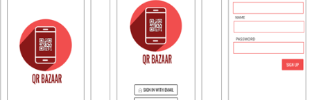
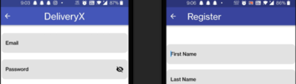

Product Manager & Content Creator
Currently, I am looking for new grad roles!
💡 Strategic Thinking, 📊 Analytical and Data-Driven Decision Making, Problem Solving, and Collaborative: these phrases summarize my ideas in a nutshell. It's in my nature to dive deep into problems and explore them from a user's perspective, all while enjoying the journey. Having worked in Product Management for 2 years, I realized that pursuing a Master's Degree in Management Information Systems is the best choice for me at this juncture.

An android app implementation based on a self-checkout billing/payment method for no contact billing system Uses a QR code-based system that can be used to self bill and pay using Unified Payments Interface and Payment Gateways in core java and connected to firebase real-time JSON datbase.

Delivery X is a peer-to-peer-based courier delivery application. The application delivers any kind of package to the respective end and offers security, tracking service, and faster deliveries. It is also a way of creating jobs for people and a source of employment.
An app designed for Companies to find freelancers according to their development and project requirements. Based in core java and connected to firebase real-time JSON database to keep track of live requests and responses.
Developed a real-time Facial Emotion Recognition Model in Python using a Convolutional Neural Network and the 'FER 2013' Dataset from Kaggle that can instantly detect the emotions of people through visual input. Achieved accuracy 85%.